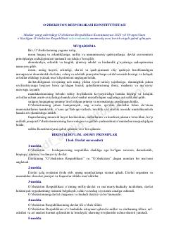

ORO‘zbekiston Respublikasining asosiy qonuni va huquqiy poydevori bo'lgan Konstitutsiya matni.
Mazkur hujjat O‘zbekiston Respublikasining asosiy qonuni bo‘lib, davlat tuzilishi, fuqarolarning huquq va erkinliklari hamda hokimiyat organlari faoliyatining asosiy prinsiplarini belgilaydi. Yangi tahrirdagi Konstitusiya 2023-yil 30-aprelda umumxalq referendumi orqali qabul qilingan. Kitob mamlakatning asosiy huquqiy-demokratik yo'nalishlarini o'rganish uchun asosiy manbadir.